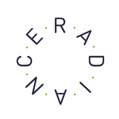

Management of more than 20 client’s relationships and ensure on-time delivery. I managed the online campaign of my clients in a daily basis, from the definition of the media plan through the launch and creation of the campaign towards the optimisation and reports.
With a love for new technologies, I became part of the LabX (innovation team) with weekly meetings to discover the new innovations and how it can be relevant for the team or our clients.
Tools: Google Analytics, DBM, Reportgarden, Adwords, Facebook Ads Manager, Snapchat Ads, Linkedin Ads Manager, Excel
Soft Skills: Communication, Teamwork, Flexibility, Rigor
Radiance Medias

Digital Campaign Manager
Montreal, Canada / September 2018-July2019